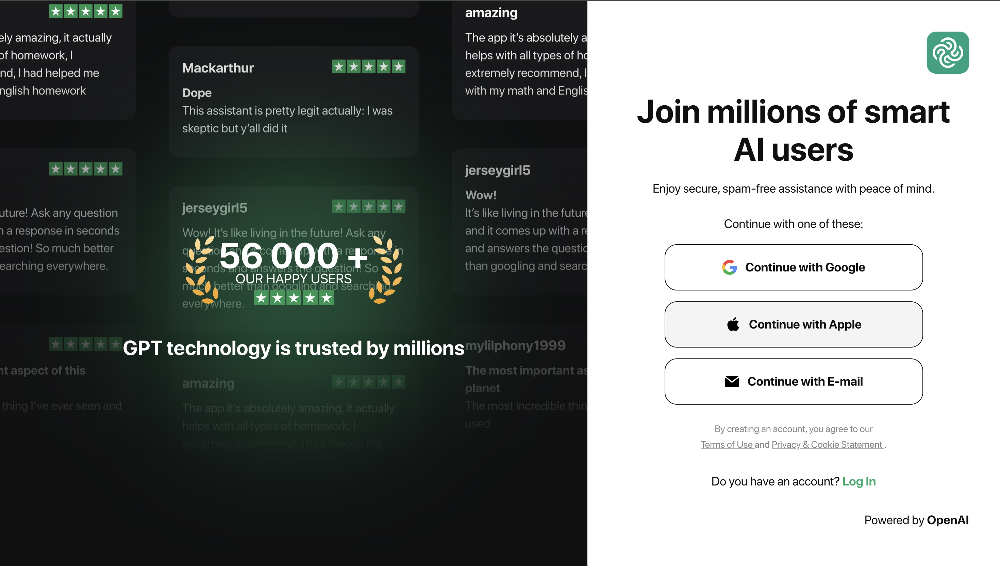
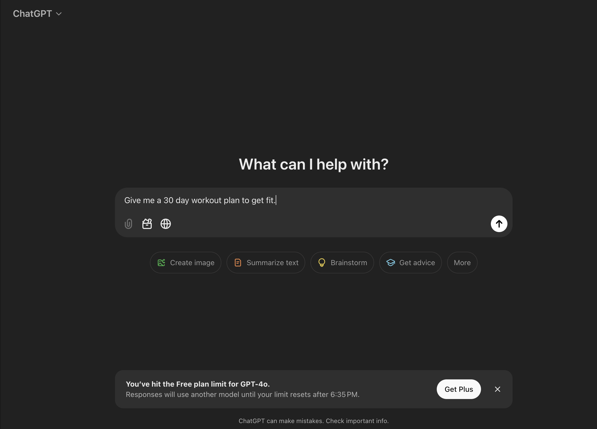
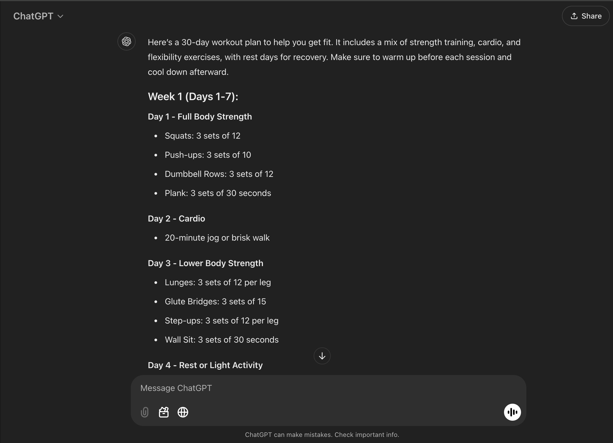

Welcome to the IMDA Gen AI Learning Package
What is Artificial Intelligence (AI)?
Artificial Intelligence (AI) is the science of teaching machines to mimic intelligent human behaviors. AI systems are taught and trained using computer programming that learns and adapts.
Now, what exactly is GenAi?
GenAi, also known as Generative Artificial Intelligence, refers to computer programs that use artificial intelligence to create new content. While GenAi can be used like search engines to find pre-existing information on the Internet, its main use is to create entirely new content!
Examples of What GenAi Can Do
GenAi is capable of performing a wide variety of tasks. Here are a few examples:
-
Text Generation:
GenAi can generate creative and coherent text, such as stories, articles, or even poetry, based on a prompt or input.

-
Image Generation:
GenAi can create entirely new images, from abstract art to realistic photos, based on descriptions or themes provided by users.
-
Music Composition:
GenAi can compose music, generating original melodies and harmonies across different genres and styles.
-
Code Generation:
GenAi can assist developers by generating functional code snippets or even complete programs based on specific requirements.

-
Video Creation:
GenAi can create short videos or animations, including deepfake technology and video editing, based on given parameters.

-
Game Development:
GenAi can design levels, characters, and storylines for video games, making the development process faster and more creative.
Common GenAi Tools and How to Use Them
-
Step 1: Choose a Generative AI Tool
To get started with GenAi, choose a tool such as OpenAI's GPT for text generation, or DALL·E for image creation. These platforms are easy to access through their websites.

-
Step 2: Sign Up and Log In
Most platforms will require you to sign up and create an account. Fill in your information and log in to access the tool.
 -
Step 3: Enter Your Prompt or Parameters
For text generation, enter your desired prompt or idea into the text box. For image creation, describe the image you want to generate in detail.
 -
Step 4: Generate and Review
Click the "Generate" button, and let the AI do its magic! Review the output and make adjustments as needed.

How to Write Better Prompts
- 1. Use Natural Language
Write as if you are speaking to another person. Express thoughts in full sentences.
- 2. Be Specific and Iterate
Tell the Gen AI tool what you need it to do. Provide as much context as possible.
- 3. Be Concise and Clear
Start with clear, direct questions or statements on what you want the Gen AI tool to do.
- 4. Keep the Conversation Going
Fine-tune your prompts if required and use follow-up prompts to get a better response.